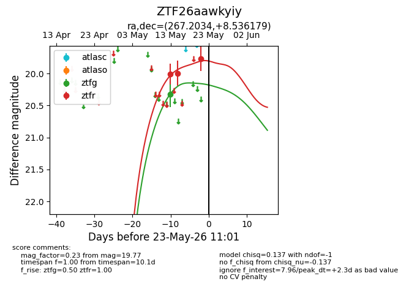
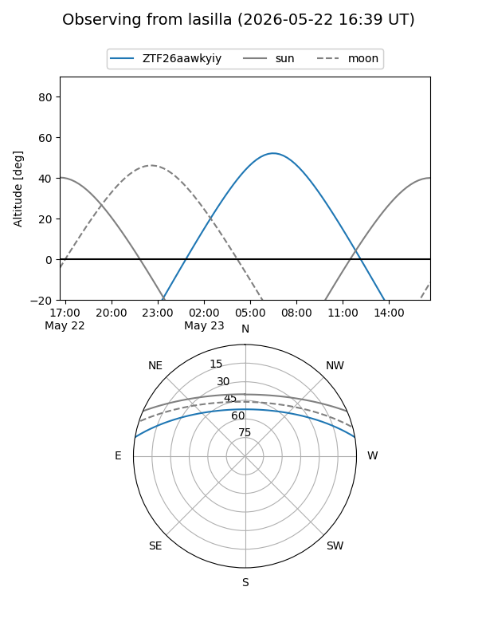
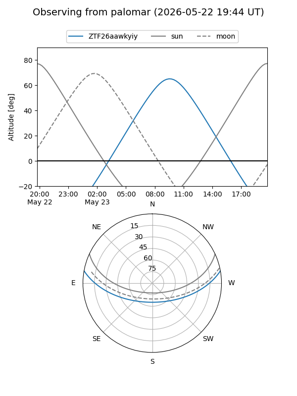
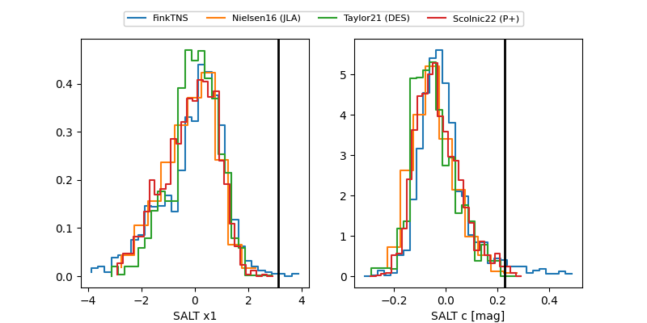

ZTF26aawkyiy
Target ZTF26aawkyiy at 2026-05-23 11:03
Aliases and brokers:
lsst-FINK: link
lsst-Lasair: link
lsst-ALeRCE: link
ztf-FINK: link
ztf-Lasair: link
ztf-ALeRCE: link
alt names
ZTF26aawkyiy (ztf,fink_ztf)
Coordinates:
equatorial (ra, dec) = 267.2034,+8.53618
equatorial (HMS+DMS) = 17:48:48.82,+08:32:10.24
galactic (l, b) = (33.5586,+17.77002)
Flags:
Photometry:
last ztfg=20.32, ztfr=19.77
1 ztfg, 3 ztfr detections
Lightcurve

Visibility


Additional plots
